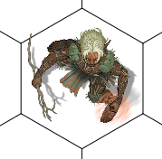
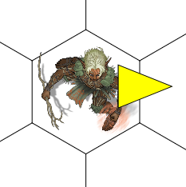

Objeto SceneDawingOpPath
Objeto SceneDrawingOpPath
O Objeto SceneDrawingOpPath representa uma operação gráfica de um caminho/forma/polígono em um SceneCanvas .
Herança
O objeto SceneDrawingOpPath herda de SceneDrawingOp e possui também TODAS todas as suas características.
Veja também:
Características
Além das características herdadas, o objeto SceneDrawingOpPath também possui as seguintes características:
Propriedades e atributos
| Propriedade | Tipo | Descrição |
|---|---|---|
| objectType | String "opPath" | (Somente Leitura) Contém um texto que identifica o tipo da operação gráfica - "opBitmap". |
| data, pathData ou path | String | Define a forma vetorial do path. Este texto deve estar no mesmo padrão do path do SVG e do XAML. Consulte a documentação deles na internet! Outro link que pode ajudar: http://www.w3schools.com/svg/svg_path.asp Observação Importante: Path será automaticamente redimensionado para ficar com a mesma dimensão definida para esta operação gráfica. |
| color | String de Cor | Define a cor do conteúdo da forma. Veja String de cores para obter a completa de cores e outras formas de uso. Define a cor do conteúdo da forma. Valor padrão: White |
| strokeColor | String de Cor | Define a cor do contorno da forma. Veja String de cores para obter a completa de cores e outras formas de uso. Define a cor do conteúdo da forma. Valor padrão: Black |
| strokeSize | Double | Define a largura do contorno da forma. O significado deste número depende do valor da propriedade "strokeSizeMetric" Valor padrão: 0.0; |
| strokeSizeMetric | Enumerado: "screenMetric" "worldMetric" "canvasMetric" "cellMetric" | Define em que medida a propriedade "strokeSize" está medida. "screenMetric" - (Padrão) strokeSize está representado em métricas de tela. "worldMetric" - strokeSize está representado em métricas de mundo. "canvasMetric" - strokeSize está representado em métricas de canvas, onde, por exemplo, 0.5 = metade da largura/altura do token/desenho e 1.0 = largura/altura do token/desenho. "cellMetric" - strokeSize está representado em métricas de células. (Exemplo, 0.5 = meia célula do grid, 2 = duas células do grid) |
| strokeCap | Enumerado: "flat" "round" | Define o estilo gráfico usado ao desenhar o fim das linhas. "flat" - linhas com pontas retangulares "round" - linhas com pontas arredondadas. Valor padrão: "flat" |
| strokeJoin | Enumerado: "miter" "round" "bevel" | Define o estilo gráfico usado ao juntar segmentos de linha em uma forma. "miter" - As quinas/junções são "quadradas". "round" - As quinas/junções são arredondadas. "bevel" - As quintas/junções são ligadas de forma diagonal. Valor padrão: "miter" |
| strokeDash | Enumerado: "solid" "dash" "dot" "dashDot" "dashDotDot" | Define o estilo gráfico da linha. "solid" - A linha é sólida "dash" - A linha é tracejada "dot" - A linha é feita de pontos. "dashDot" - A linha é alternada entre traços e pontos. "dashDotDot" - A linha é alternada entre traço, ponto e ponto. Valor padrão: "solid" |
Métodos
| Método | Descrição |
|---|---|
Eventos
| Nome do evento | Descrição |
|---|---|
Exemplos
Exemplo 1 - Um plug-in que adiciona/remove um triângulo amarelo quando o usuário clica nos itens do scene.
| require("scene.lua"); SceneLib.registerPlugin( function (scene, attachment) -- Manipular o evento OnMouseDown do Viewport scene.viewport.onMouseDown = function(event) -- Usuário clicou no Scene -- Transformar as coordenadas de tela em métrica de mundo local worldX, worldY = scene.viewport:screenToWorld(event.x, event.y); -- Localizar o item que o usuário clicou local item = scene.items:itemAtPoint(worldX, worldY); if item ~= nil then -- Encontrou um item na posição clicada. * local NOME_MINHA_MARCA = "MarcaExemplo"; -- Localizar uma operação gráfica neste item com o nosso nome local opGrafica = item.canvas:findByName(NOME_MINHA_MARCA); if opGrafica == nil then --[[ A operação gráfica da minha marca ainda não existe neste token/item. Vamos criar ]] opGrafica = item.canvas:addPath(); opGrafica.name = NOME_MINHA_MARCA; -- Começar a desenhar no X equivalente a 80% da largura do item -- Começar a desenhar no Y equivalente a 25% da altura do item opGrafica.x = 0.8; opGrafica.y = 0.25; opGrafica.width = 0.5; -- Largura do Path: 50% da largura do item * opGrafica.height = 0.4; -- Altura do Path: 40% da altura do item opGrafica.z = 10; -- Cores e estilo do PATH opGrafica.color = "yellow"; opGrafica.strokeSize = 1; -- O path data (Um triângulo apontado para a direita) opGrafica.data = "M 0 0 L 1 0.5 L 0 1 Z"; else -- Vamos apagar nossa operação gráfica previamente criada opGrafica:delete(); end; end; end; end); |
|---|
|  Item sem a marca |  Item com a marca |
|---|---|
Exemplo 2 -
Created with the Personal Edition of HelpNDoc: Easily create EBooks